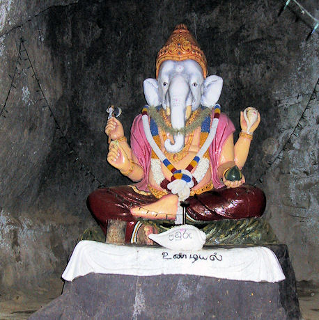
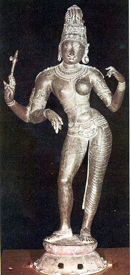
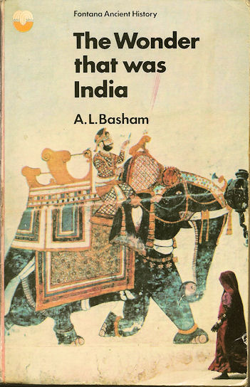
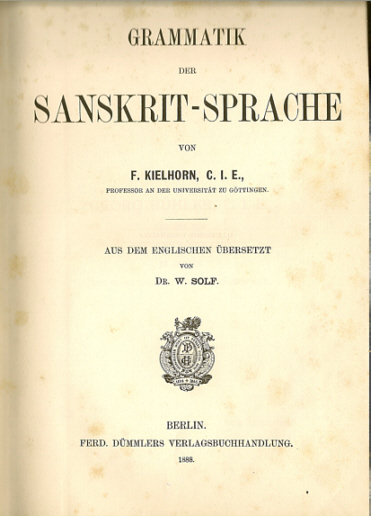
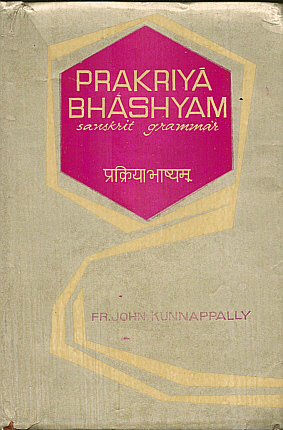
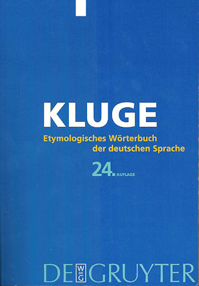
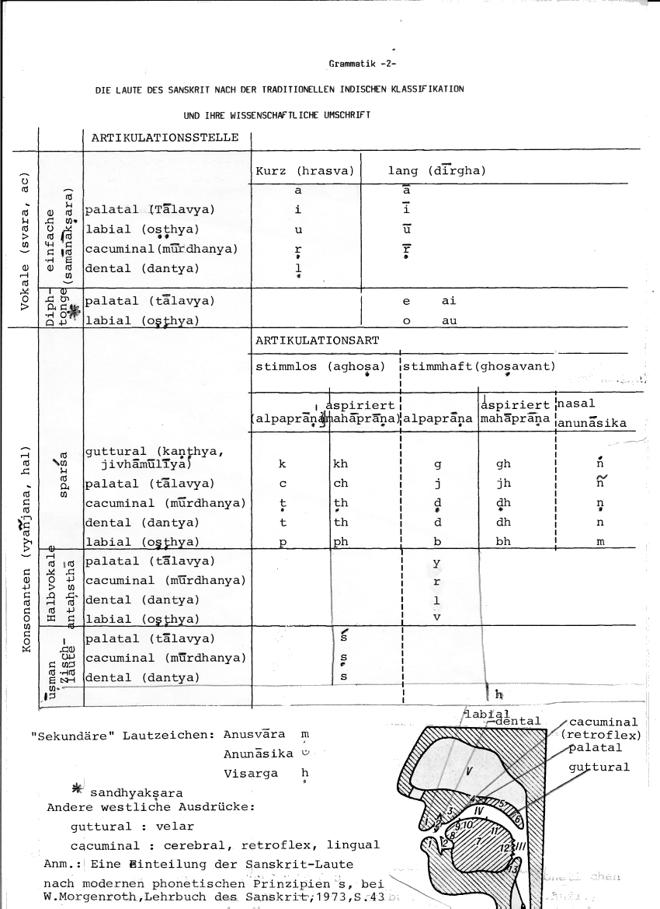

mailto:payer@payer.de
Zitierweise | cite as:
Payer, Alois <1944 - >: Sanskritkurs. -- 1. Lektion 1. -- Fassung vom 2010-03-01. -- URL: http://www.payer.de/sanskritkurs/lektion01.htm
Erstmals hier publiziert: 2008-11-17
Überarbeitungen: 2010-03-01 [Verbesserungen]; 2010-01-15 [Ergänzungen]; 2009-01-27 [Verbesserungen und Ergänzungen] ; 2008-11-24 [Ergänzungen]
Anlass: Lehrveranstaltungen 1980 - 1984
©opyright: Dieser Text steht der Allgemeinheit zur Verfügung. Eine Verwertung in Publikationen, die über übliche Zitate hinausgeht, bedarf der ausdrücklichen Genehmigung des Verfassers
Dieser Text ist Teil der Abteilung Sanskrit von Tüpfli's Global Village Library
Falls Sie die diakritischen Zeichen nicht dargestellt bekommen, installieren Sie eine Schrift mit Diakritika wie z.B. Tahoma.
Die Devanāgarī-Zeichen sind in Unicode kodiert. Sie benötigen also eine Unicode-Devanāgarī-Schrift.

Abb.: Gaṇeśa, Adamspeak, Sri Lanka
[Bildquelle: Wikipedia, gemeinfrei]
लम्बोदर नमस् तुभ्यं
सततं मोदकप्रिय |
निर्विघ्नं कुरु मे देव
सर्वकार्येषु सर्वदा ||
lambodara namas tubhyaṃ
satataṃ modakapriya |
nirvighnaṃ kuru me deva
sarvakāryeṣu sarvadā ||
Du Hängebauch, Du Naschkatze,
Stets sei Dir Verehrung!
Gott, mache all meine Unternehmungen
Frei von Hindernissen!

Abb.: Ardhanarīśvara
(Bildquelle: Wikipedia, Public domain)
वागर्थाविव संपृक्तौ
वागर्थप्रतिपत्तये |
जगतः पितरौ वन्दे
पार्वतीपरमेश्वरौ ||
vāgarthāviva saṃpṛktau
vāgarthapratipattaye |
jagataḥ pitarau vande
pārvatīparameśvarau ||
(Kālidāsa: Raghuvaṃśa 1.1)
Ich grüße die Eltern der Welt,
Pārvatī und Śiva,
Die so fest miteinander verbunden sind
Wie Wort und Sinn zum Verständnis
Des Wortsinns.
Zu Beginn ein Kuriosum:
"Als William Jones [17461794] und Henry Thomas Colebrooke (17651857) das Sanskrit erstmalig gründlich studiert, teilweise übersetzt und gefunden hatten, dass es eine reiche Literatur und nicht geringe Verwandtschaft mit den klassischen Sprachen aufwies, stießen sie auf nicht geringen Widerstand. Da sich mit dieser innigen Beziehung des Sanskrits zu den geographisch so weit entlegenen europäischen Sprachen die alten Anschauungen, welche entweder alle Sprachen aus dem Hebräischen ableiteten oder größtenteils von einander isolierten, nicht in Einklang bringen lassen, so ergriff der berühmte Philologe Dugald Steward (17531828) den einfachsten Ausweg, indem er die ganze Geschichte mit der Sanskritsprache für eine Lüge erklärte. Er schrieb einen Essay, in dem er zu beweisen suchte, dass sie von den spitzbübischen Brahmanen nach dem Muster des Griechischen und Lateinischen zusammengeschmiedet sei und die Sprache sowohl als auch die Literatur eine Fälschung seien. Diese Ansicht entwickelte noch im Jahre 1840 der Professor in Dublin, Charles William Wall, weitläufig (Göttingische gelehrte Anzeigen 1842 S. 1888)." [Quelle: Kemmerich, Max <1876-1932>: Kultur-Kuriosa. -- München : Langen. -- Bd. 2. -- 1923. -- S. 74. -- Online: http://www.archive.org/details/kulturkuriosa02kemmuoft. -- Zugriff am 2010-01-10]

Abb.: Einbandtitel einer Taschenbuchausgabe
Basham, A. L. (Arthur Llewellyn) <1914-1986>The wonder that was IndiaTeil: A survey of the culture of the Indian sub-continent before the coming of the Muslims. -- London : Sidgwick & Jackson, 1954. -- Seither viele Ausgaben, auch Taschenbuchausgaben. -- Pflichtlektüre. Eine gute Übersicht über Leben, Geschichte und Kultur im vormuslimischen Indien. Gesamtübersicht über die verschiedenen Gebiete der klassischen Indologie.

Abb.: Titelblatt
Beste systematische Grammatik
Kielhorn, Franz <1840-1908>: Grammatik der Sanskrit-Sprache / Aus dem Englischen übersetzt von W. Solf [1862 - 1936]. -- Berlin : Dümmler, 1888. -- XIII, 238 S. -- Originaltitel: A grammar of the Sanscrit language

Abb.: Umschlagtitel
Gute systematische Grammatik auf der Grundlage der einheimischen Grammatiker und zugleich eine Einführung in Pāṇini:
Kunnappally, John: Prakriyā bhāshyam : Sanskrit grammar / Originally written in Malayalam. Translated into English by K.V.R. Pai. -- Parathode : Selbstverl., 1983. -- 818 S. ; 23 cm.

Abb.: Einbandtitel
Eine gute, knappe Darstellung der europäischen sprachwissenschaftlichen Terminologie findet man in:
Etymologisches Wörterbuch der deutschen Sprache / [Friedrich] Kluge<1856 - 1926>. Bearb. von Elmar Seebold. -- 24., durchges. und erw. Aufl.. -- Berlin [u.a.] : de Gruyter, 2002. - LXXXIX, 1023 S. : 24 cm. -- ISBN 3-11-017473-1 Paperback. -- S. XIII - XLVII.
Abb.: Umschlagtitel
Für Wissbegierige zum Nachschlagen:
Lexikon der Sprachwissenschaft / hrsg. von Hadumod Bußmann. -- 4., durchges. und bibliogr. erg. Aufl. / unter Mitarb. von Hartmut Lauffer. -- Stuttgart : Kröner, 2008. -- 816 S. ; 22 cm. -- ISBN 978-3-520-45204-7

Moderne Wörterbücher des Sanskrit sind in der Reihenfolge dieser Klassifikation angeordnet. Diese Klassifikation und die Reihenfolge der Laute ist zum Verständnis der Sanskrit-Grammatik unerlässlich und muss deshalb auswendig gewusst werden:
einfache Vokale (samānākṣara -- समानाक्षर):
अ a, आ ā, इ i, ई ī, उ u, ऊ ū, ऋ ṛ, ॠ ṝ, ऌ ḷDiphtonge (sandhyakṣara -- सन्ध्यक्षर):
ए e, ऐ ai, ओ o, औ auKonsonanten (vyañjana / hal -- व्यञ्जन / हल्):
क ka, ख kha, ग ga, घ gha, ङ ṅa
च ca, छ cha, ज ja, झ jha, ञ ña
ट ṭa, ठ ṭha, ड ḍa, ढ ḍha, ण ṇa
त ta, थ tha, द da, ध dha, न na
प pa, फ pha, ब ba, भ bha, म ma
य ya, र ra, ल la, व va
श śa, ष ṣa, स sa
ह ha
| a - अ | "kurzes a" wird bei den Indern -- schon seit alter Zeit -- oft wie ə ausgesprochen. In Europa spricht man es als kurzes a, in Bengalen als kurzes dunkles o. |
|---|---|
| ṛ - ऋ | wie böhmisches vokalisiertes r. Leichter Nachklang von i. |
| ṝ - ॠ | wie böhmisches vokalisiertes r. Leichter Nachklang von u. |
| jñ - ज्ञ् | auch wie dny (Marāṭhī) oder gy (Nordindisch). |
| ś - श् | sch-Laut mit nach unten gebogener Zungenspitze. Ähnlich wie sch in "mischen". |
| ṣ - ष् | ach-Laut mit zurückgebogener Zungenspitze. Öfters so weit hinten im Rachen artikuliert, dass es fast wie kh klingt. |
| h - ह् | Hauchlaut, nie Dehnungszeichen. |
| ḥ - : | Visarga (Visarjanīya) -- विसर्ग / विसर्जनीय. Stimmloser Hauchlaut mit Nachklang des vorhergehenden Vokals oder des zweiten Teils des vorausgehenden Diphtones: agniḥ -- अग्निः = agnihi, devaiḥ -- देवैः = devaihi, gauḥ -- गौः = gauhu |
| ṃ | Anusvara -- अनुस्वर
|
Die beste Aussprache erreicht man, wenn man die Sätze, Verse oder Wörter ziemlich langsam und monoton mit genauer Berücksichtigung der Länge der Vokale liest.
A) Lesen Sie folgende Worte:
B) Lesen Sie die Sanskrit-Ausdrücke in der Lautklassifikation oben.
Zu Lektion 2